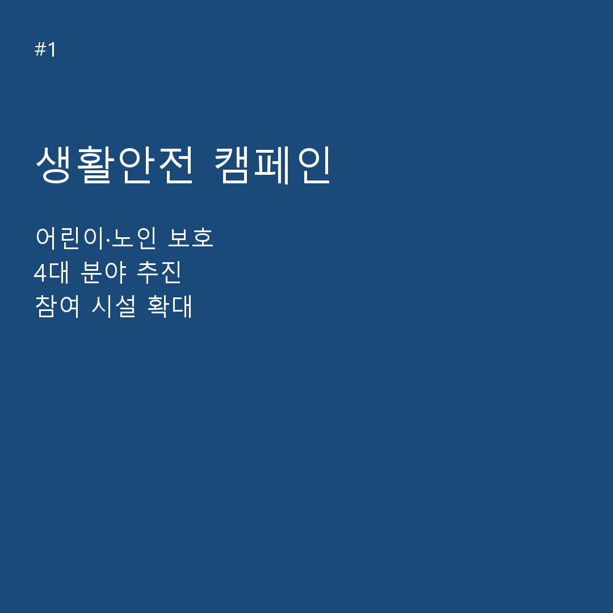
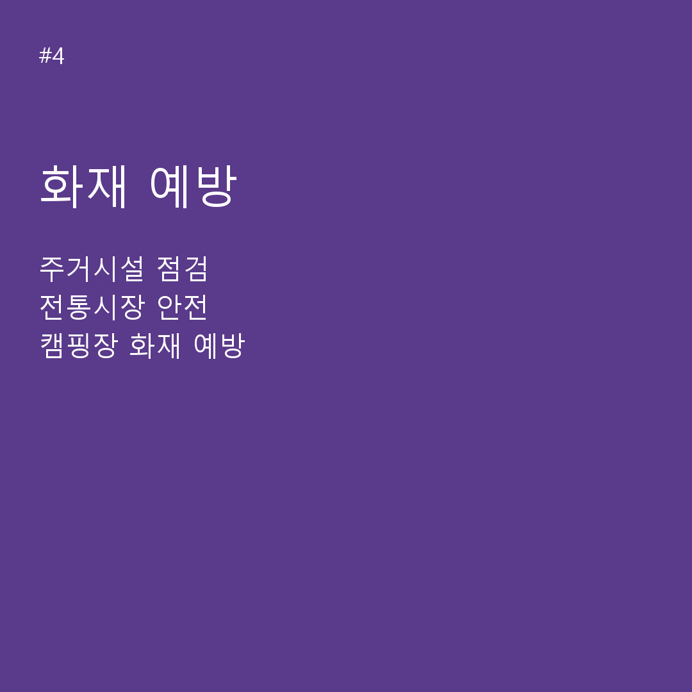

PUBLIC SERVICE DIRECTORY
필요한 안내서비스,
한눈에 찾아보세요.
복잡하게 찾지 않아도 괜찮아요.
카테고리와 문의기관을 검색해 필요한 안내를 확인하세요.
※ 본 페이지는 FISAI 밋업 과제용으로 제작되었으며, 실제 공공서비스 정보가 아닙니다.
SERVICE OVERVIEW데이터 현황
전체 안내서비스
—건
안내 카테고리— 개
온라인 안내 가능— 건
01 / INFORMATION CARDS
안전 정보 카드뉴스
과제에서 제공된 카드뉴스 4장을 확인해 보세요.




02 / EXPLORE SERVICES
서비스 카테고리
분야별 안내와 문의기관을 확인해 보세요.
—개 카테고리
결과 0건
카드를 선택하면 세부 서비스가 표시됩니다.
검색 결과가 없습니다.
다른 카테고리나 문의기관 이름으로 검색해 주세요.
데이터 출처: 과제 제공 안내서비스.csv (24건) · 대표 문의기관은 카테고리별 최빈값 기준 · 제공 데이터는 실제 기관 정보와 다를 수 있습니다.